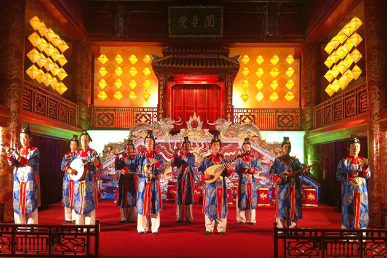

Historical
Located in the center of the country and in the Central key economic region, Hue has been identified by the Central Government as a class I urban area, a world cultural heritage city, and a center of culture and tourism. unique, is the Festival city of Vietnam. Hue city is the last feudal capital of Vietnam, which has a long history and cultural tradition with unique values and identity. The cultural heritage values here represent the attractive features of a cultural region, both specific - indigenous, national - popular, and selectively absorbing the quintessence of different cultures. Asian and European culture.
.jpg)
Tranditional cuisine
Hue traditional cuisine always makes people remember forever thanks to its unique flavor and preparation, imbued with the quintessence of national culture. Unlike other regions, Hue specialties have the rich, spicy taste of the Central region but have a strange appeal. And it is really cheap and it's very worth to try.
This is many types of different cakes
Hue beef noddle soup
Tranditional Culture
Hue royal court music is the term used to refer to the main music used in the ancient royal court on every occasion and festival, a product combining ceremony and music. Court music originated in the Le Dynasty, but it was not until the Nguyen Dynasty that court music developed systematically and methodically. Hue royal court music was recognized by UNESCO as an intangible cultural heritage in 2003. Beside that, when traveling to Hue, you will experience two types of festivals: royal festivals and folk festivals. Royal festivals often focus on ceremonies rather than festivals, reflecting the ceremonial activities of the court. Folk festivals include many diverse festivals such as: Hue Nam festival in Hon Chen according to Champa beliefs, festivals commemorating the saints who founded the village, festivals commemorating the ancestors of traditional craft villages..
